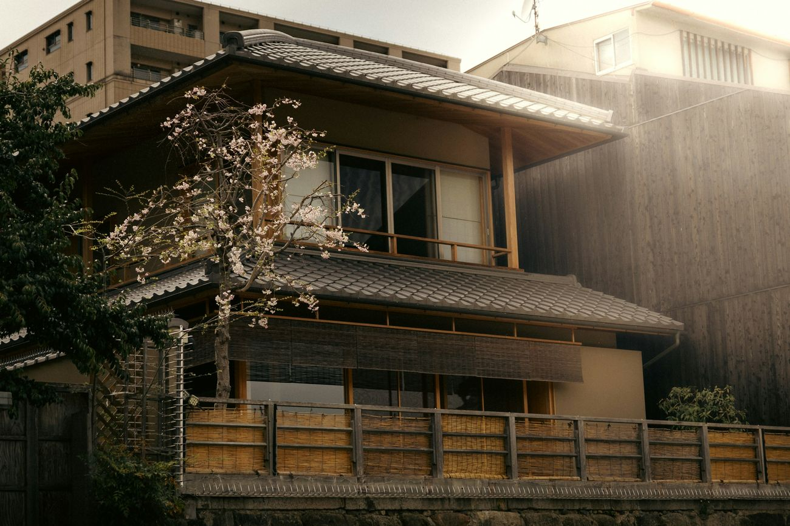
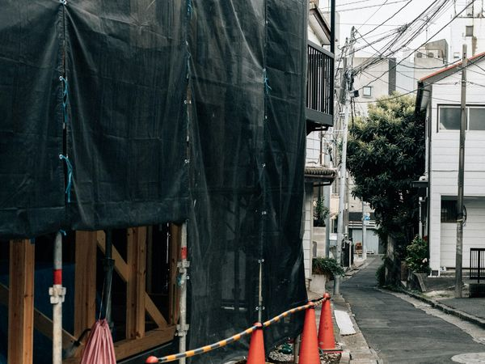
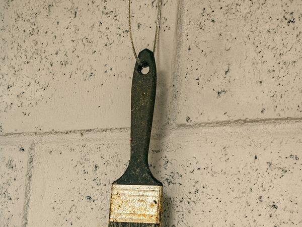
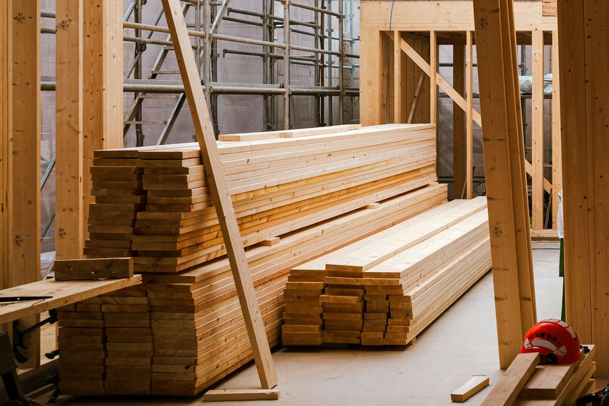
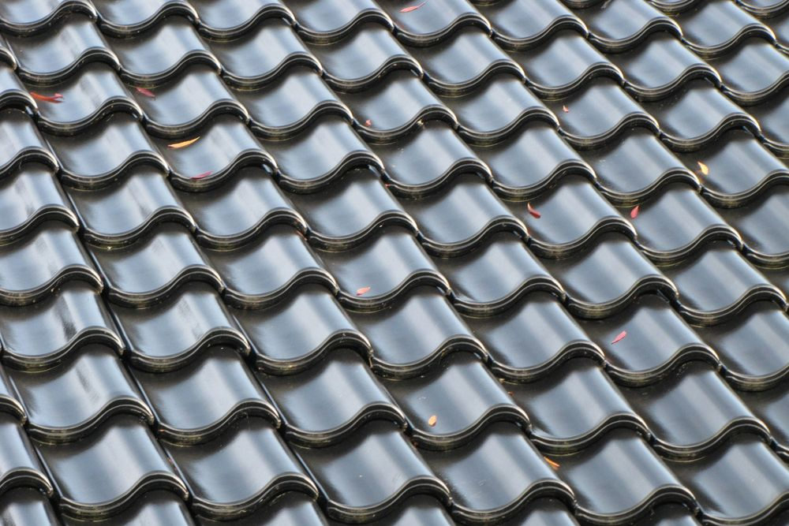
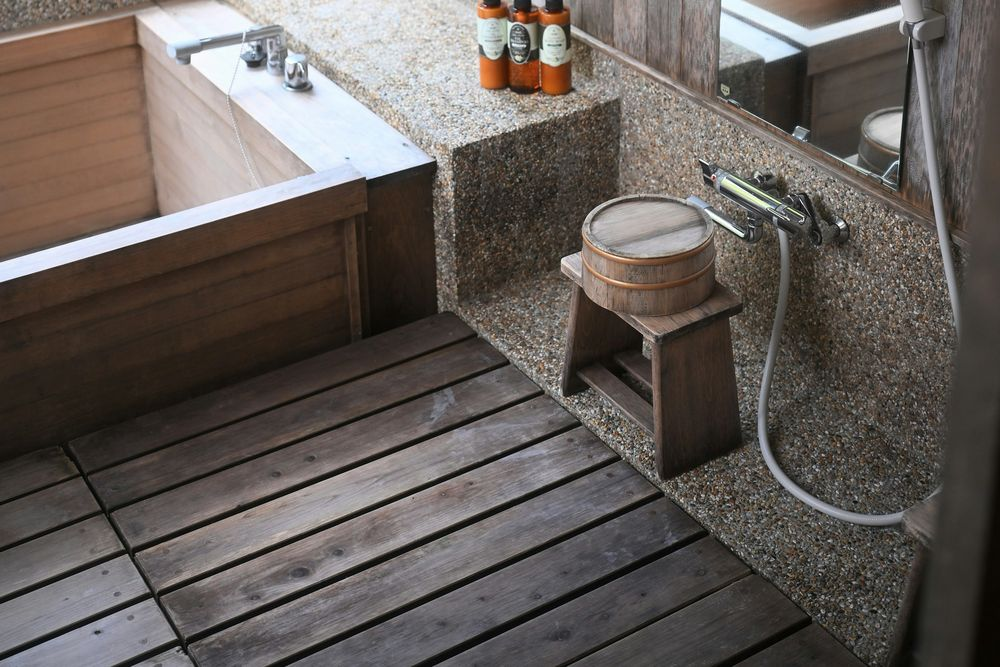
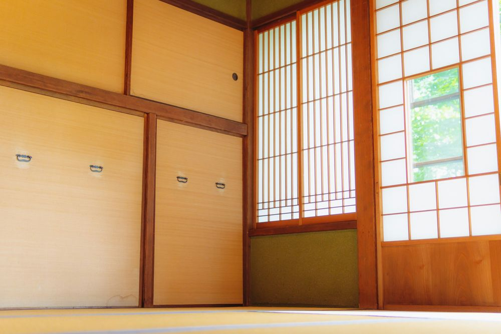

工事店・リフォーム・造園の会社様へ
名前を聞いた方が、 確かめに来る場所を。 施工事例を、1件ずつ ページにします。
10件公開のときの施工事例
月4件まで公開後に増やす施工事例
0円見本をお作りする費用
先に御社名で見本をお作りします。費用はかかりません。
見本（架空の事例です）・写真はイメージです
施工事例 ＞ 外壁塗装
築35年の木造2階建て、外壁の塗り替えと木部の保護塗装

01
施工事例は、1件を1ページに。
塗装・防水・屋根・造園・外構・水まわりのお客様の多くは、ご紹介やチラシ、看板で御社の名前を知ります。そのあと、ご家族と一緒に名前で検索して、確かめに来られます。そこでお見せする施工事例には、この8つを必ずそろえます。
見本の続き（同じページの下の部分）
- ①所在地
- 〇〇市
- ②建物
- 木造2階建て・築35年
- ③工事
- 外壁塗装・木部の保護塗装
- ④塗料
- 水性シリコン樹脂塗料（外壁）、木材保護塗料（木部）
- ⑤工期
- 14日間
- ⑥費用
- 110〜130万円（税込）
- ⑦施工
- 2026年5月
⑧工程の写真


この工事の保証
外壁7年・木部3年。1年後・3年後・5年後に点検に伺います。
担当より
南側の木部は日差しで傷みが早いため、ほかの面より1回多く塗りました。
- ①所在地
市町村までにします。施主様のお宅が分からないようにするためです。
- ②建物
構造と階数、築年数。同じ工事でも、建物で金額と工期が変わるためです。
- ③工事
どこに、何をしたか。外壁・屋根・木部のように、場所ごとに書きます。
- ④塗料
製品名で書きます。塗装でない工事では、使った材料や機器の品番を書きます。
- ⑤工期
着工から完工までの日数です。
- ⑥費用
税込で書きます。ちょうどの額を出しにくいときは、幅で書きます。
- ⑦施工
施工した年と月です。施工年月の無い金額は、いまのお見積りと食い違ったときに誤解を生むためです。
- ⑧写真
施工前・工程・施工後。仕上がると見えなくなる下地の仕事も、工程の写真で伝わります。
02
月を重ねるほど、施工事例が増えていきます。
公開したあとは、LINEで届いた施工写真を、毎月4件まで施工事例のページにします。一覧のページには、新しい工事から順に並びます。
見本：施工事例の一覧（架空の事例です）
- 外壁・屋根の塗り替え〇〇市
- ベランダの防水△△町
- アパートの外壁塗装〇〇市
- 雨どいの交換〇〇市
- 屋根の葺き替え△△町
- 工場の屋根の防水〇〇市
公開から12か月で、施工事例は
10件最大58件
公開のときの10件に、毎月4件までを12か月重ねると、最大で58件になります。写真の届かない月は、その月のぶんは増えません。
03
選ばれた理由は、見た目より、人と金額でした。
リフォームをした方に、その会社を選んだ理由を尋ねた調査があります。デザインを挙げた方は、1割ほどでした。作るホームページの中身は、この順に決めています。
44.6%
担当者の対応・人柄
代表と職人のお顔と、お人柄の伝わるお話を載せます。写真は伺ってこちらで撮り、お話は伺って書き起こします。
29.3%
工事価格の透明さ・明朗さ
費用の目安と、工程ごとの単価の表を載せます。「一式」とまとめずに、分けてお見せします。
30.5%
見積もりの相場や適正価格がわからない検討中の方の不安
御社のお見積書に書いてあることを、項目ごとにご説明するページを作ります。
12.7%
デザインセンス
見た目は、写真が大きく見えて、文字が読みやすいことを第一にしています。
出典：住宅リフォーム推進協議会「2024年度 住宅リフォームに関する消費者実態調査」（2025年2月公表）。選んだ理由はリフォームをした方988人、不安はリフォームを検討中の方1,026人の回答（いずれも複数回答）。
04
工事ごとに、確かめたいことは違います。
施工事例は、どの工事でも1件を1ページにします。そのうえで、載せる項目を工事に合わせて変えます。
-

建築・リフォーム
間取りの変更や増改築は、施工前と施工後の写真を並べ、工期と費用を添えます。
-

塗装・防水・屋根
塗料や防水材の製品名と、下塗りから仕上げまでの工程の写真を載せます。
-
造園・外構
お庭や駐車場は、使った石や素材の名前と、施工した季節を添えます。
-

水まわり・設備
キッチンや浴室、トイレは、入れ替えた機器の品番を載せます。
-

内装
クロスや床は、選ばれた品番と、張り替えたお部屋の広さを載せます。
写真はイメージです。御社のページには、御社の現場の写真を載せます。
05
作るもの
半日伺って作る形でお作りする中身です。どれも御社に伺って、御社の実際に合わせて書きます。
- 施工事例（1件＝1ページ）
- 施工前・工程・施工後の写真と、費用・工期・塗料・築年数・施工年月。工事の種類と建物（戸建て・アパート・工場など）で絞り込めるようにします。公開のときは10件から始めます（オプションの「半日伺って撮る・聞く」を選ばれた場合は20件から）。
- 費用の目安
- 金額の表、含まれるもの、金額が変わる条件、あくまで目安であること。この4つを1組にしてお見せします。
- 工程ごとの単価（オプション）
- 「外壁塗装工事 一式」を、足場・高圧洗浄・下塗り・中塗り・上塗りのように工程に分けた表です。30,000円のオプションで、「半日伺って撮る・聞く」とあわせてお願いされた場合に、伺って単価を決めていただきます。基本の料金には含みません。
- お見積書の見方
- 御社のお見積書に書いてあることを、項目ごとにご説明します。
- 保証と点検
- 保証の年数と、点検に伺う時期。ご契約のあとの、金額と工期のお約束もあわせて書きます。
- 工事の流れ
- お問い合わせから、現地の調査・お見積り・色の決め方・着工・完工・点検まで。
- 法人・管理会社様へ
- 元請の協力会社としてのお取引、建物診断の報告書、操業を止めない工程のご案内。
- 会社概要と許可・資格
- 建設業許可の番号と業種、設立の年、資格、加入している保険。公開されている情報は、こちらで調べて記載します。
- 職人の紹介・採用（オプション）
- 現場に伺う職人のご紹介は、「半日伺って撮る・聞く」オプションでお作りします。採用のページは、別のオプション（50,000円）です。
- お客様の声
- お声がけは御社からお願いします。質問の項目とお願いの文面はこちらで用意し、いただいたお答えを読みやすい文章に整えます。
- Googleマップ
- Googleマップに出る御社の欄（Googleビジネスプロフィール）の登録を整えます。
06
見本をご覧になってから、決めていただけます。
ご依頼をいただく前に、御社名で見本をお作りしてお送りしています。言葉でご説明するより、画面を見ていただくほうが早いためです。
- 1
御社名で、見本をお作りします
写真の場所は空の枠、決まっていない数字は〔 〕の空欄のままで、ひと通りの構成をお作りしてお送りします。費用はかかりません。検索には出ない設定にしてあり、ご不要でしたら、ご連絡をいただいた時点で削除します。
- 2
1時間ほど、伺います
載せる内容と、御社にしか決められないことを伺います。見本の〔 〕の空欄は、ここで埋めます。「半日伺って撮る・聞く」オプションを選ばれた場合は、半日伺い、代表・職人・事務所・現場をこちらで撮影し、2時間ほどお話を伺います。
- 3
写真をお預かりします
お手元にある施工前・施工後の写真を、LINEかメールでお送りください。1件ずつ、施工事例のページにします。
- 4
ご確認いただいて、公開します
仕上がりをご覧いただき、直すところを直してから公開します。あわせて、Googleマップの登録を整えます。
- 5
毎月4件まで、施工事例が増えます
公開したあとは、LINEで届いた施工写真を、毎月4件まで施工事例のページにします。月末には、こちらから写真のお声がけをします。
07
御社にお願いすることは、6つです。
料金のお話より先に、御社の手間のお話をいたします。文章はお話を伺ってこちらで書きます。お願いするのは、次の6つです。
- 1時間ほどのお時間
- 載せる内容を決め、代表のお顔を1枚撮ります。「半日伺って撮る・聞く」オプションを選ばれた場合は、半日のお時間をいただきます。
- 施工前・施工後の写真（10件ぶん）
- お手元に残っている分で結構です。「半日伺って撮る・聞く」オプションを選ばれた場合は、伺った日に現場を1件こちらで撮影します。
- 決めていただくこと
- 保証の年数と点検、着手金、ローンの有無、加入している保険。「工程ごとの単価」オプションを選ばれた場合は、単価もあわせて決めていただきます。御社にしか決められないことだけです。
- お客様の声のお願い
- お声がけは、御社からお願いします。こちらから施主様へご連絡することはありません。質問の項目とお願いの文面は、こちらで用意します。
- 毎月4件までの写真
- 公開したあとは、施工前・施工後の写真を、毎月4件までLINEでお送りください。無い月があっても構いません。
- Googleビジネスプロフィールの管理者権限
- Googleマップの整備のため、「管理者」権限をいただきます。オーナー確認が未了の場合は、お手続きをお手伝いします。
08
料金
金額はすべて税込です。お納めは、公開の翌月末までに一度に。ご希望があれば、公開した月の末と、その翌月末の2回に分けることもできます。分けることによる手数料や利息はいただきません。
制作
ホームページ本体・施工事例10件・Googleマップの整備
250,000円
保守
最低12か月お続けいただきます。
月25,000円
250,000円に入っているもの
- ホームページ本体（会社概要・費用の目安・保証と点検・工事の流れ・よくあるご質問・対応する地域・お問い合わせの導線）
- 施工事例 10件（1件1ページ）
- Googleマップ（Googleビジネスプロフィール）の整備
保守（月25,000円）に含むもの
- LINEで届いた施工写真を、毎月4件まで施工事例のページにします
- 軽微な修正（月2回まで）、サーバーとドメインの維持
- Googleマップへの投稿（写真の届かない月は季節のお知らせ）
- 月1回の数字のご報告
月を重ねるほど、施工事例が増えていきます。公開の月から12か月お続けいただき、13か月目からは、いつでもおやめいただけます。
オプション
御社に合いそうなものをご提案いたします。必要なものだけお選びください。
- 半日伺って撮る・聞く
- 半日伺い、代表・職人・事務所・現場1件をこちらで撮ります。2時間ほどの聞き取りと書き起こし。施工事例を10件から20件にします。50km圏内は交通費込みです。
- 50,000円
- 工程ごとの単価の表
- 「足場 ○円/㎡」「高圧洗浄 ○円/㎡」のように工事を部品に分け、1つずつ伺って表にします。「半日伺って撮る・聞く」とセットでのみお作りします。
- 30,000円
- 採用のページ
- 募集要項（給与は実額）・顔ぶれ・育て方・一日の流れ。
- 50,000円
- 工事の種類ごとのページ
- 「雨漏り修理」「外壁塗装」のように1ページ＝1つの困りごとで独立させます。施工事例が5件以上ある工事だけお受けします。
- 1本40,000円
- 概算見積のしくみ
- お客様が広さ・階数・塗料を選ぶと、目安の金額が出ます。必ず「目安」と書き、幅で出します。単価の表が要るので、「半日伺って撮る・聞く」とセットでのみお作りします。
- 150,000円
このほか御社に必要なものがあれば、別途お見積もりいたします。
※ ホームページは、御社の名前を聞いた方が確かめに来たときに、お見せする中身をつくるものです。お問い合わせの件数や、検索の順位をお約束するものではありません。
09
よくあるご質問
このほかのご質問は、公式LINEかメールでお気軽にお寄せください。
飲食店のホームページと、料金が違うのはなぜですか。
作業の量が違うためです。施工事例を1件ずつページにすること。Googleマップを整えること。そして公開したあとも、毎月4件まで施工事例を増やしていくこと。飲食店のホームページには、この3つがありません。
「半日伺って撮る・聞く」を選ぶと、何が変わりますか。
こちらで代表・職人・事務所・現場を撮影し、2時間ほどお話を伺って書き起こします。施工事例は10件から20件になります。工程ごとの単価の表や概算見積のしくみは、このオプションとあわせてのみお作りします。50km圏内は交通費込みです。
施工の写真が、あまり残っていません。
半日伺って撮る・聞くオプションをお選びいただくと、伺った日に現場を1件こちらで撮影します。公開したあとは、LINEでお送りいただいた写真から、毎月4件まで施工事例を増やしていきます。
お客様の声は、どうやって集めるのですか。
お声がけは、御社からお願いしています。工事をした会社からのお願いのほうが、お客様も安心してお答えくださるためです。こちらから施主様へご連絡することはありません。質問の項目とお願いの文面はこちらで用意し、いただいたお答えを読みやすい文章に整えます。
保守は、途中でやめられますか。
公開の月から12か月お続けいただきます。13か月目からは、いつでもおやめいただけます。
同じ市の同業の会社にも、ホームページを作りますか。
ご契約いただいた会社様と同じ市町村・同じ工事の会社様のホームページは、保守をお任せいただいている間はお作りしません。どの工事を同じとみなすかは、御社のホームページに載せる工事で決め、ご契約の書面に書きます。
ホームページを作れば、お問い合わせは増えますか。
お約束はできません。工事のお客様の多くは、ご紹介やチラシ、看板で御社の名前を知ります。ホームページは、その方が確かめに来たときにお見せする中身です。施工事例・費用の目安・保証・職人の顔を、そろえてお見せできるようにお作りします。
見本を見るだけでも、費用はかかりますか。
かかりません。見本は検索に出ない設定にしてあり、URLをお渡しした方しか開けません。ご不要でしたら、ご連絡をいただいた時点で削除します。
10
会社概要
地域の会社とお店のホームページを、1社ずつお作りしています。
- 屋号
- creative works+（クリエイティブワークスプラス）
- 代表
- 丸藤 啓太
- 拠点
- 茨城県
- 事業内容
- ホームページの制作と運用、Googleマップの整備
- 連絡先
- 公式LINE、または creativeworks.plus@gmail.com
（24時間以内にお返事します）
ご相談
まずは、御社の見本を
ご覧になりませんか。
御社名で、空欄つきの見本をお作りしてお送りします。費用はかかりません。続けるかどうかは、見本をご覧になってから決めてください。
メールでも承ります —— creativeworks.plus@gmail.com
QRコードを読み取るか、ボタンから友だち追加してください。そのままメッセージをお送りいただけます。